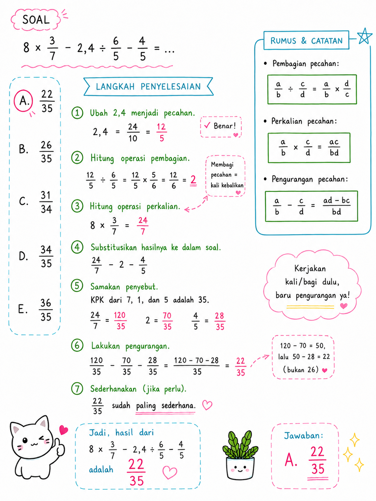

TIU — Operasi Campuran (Bilangan Bulat × Pecahan, Desimal ÷ Pecahan)
Kategori: TIU — Operasi Bilangan
Tingkat: Sedang
ID Soal: 1e743520
Soal
Hasil dari $8 \times \dfrac{3}{7} - 2{,}4 \div \dfrac{6}{5} - \dfrac{4}{5} = \;?$
- A. 22/35 ✅
- B. 26/35
- C. 31/34
- D. 34/35
- E. 36/35
Aturan yang Dipakai
- × dan ÷ dikerjakan dulu dari kiri ke kanan.
- + dan − dikerjakan setelahnya dari kiri ke kanan.
- Bilangan bulat × pecahan: $n \times \dfrac{a}{b} = \dfrac{n \times a}{b}$.
- Desimal ÷ pecahan: ubah desimal jadi pecahan dulu, lalu bagi pecahan = kali kebalikannya.
Pembahasan
Langkah 1 — Hitung $8 \times \dfrac{3}{7}$
$$8 \times \frac{3}{7} = \frac{8 \times 3}{7} = \frac{24}{7}$$
Langkah 2 — Hitung $2{,}4 \div \dfrac{6}{5}$
Ubah $2{,}4$ jadi pecahan:
$$2{,}4 = \frac{24}{10} = \frac{12}{5}$$
Bagi pecahan = kali dengan kebalikannya:
$$\frac{12}{5} \div \frac{6}{5} = \frac{12}{5} \times \frac{5}{6} = \frac{60}{30} = 2$$
Langkah 3 — Substitusi hasil ke soal
$$= \frac{24}{7} - 2 - \frac{4}{5}$$
Langkah 4 — Samakan penyebut
KPK dari 7, 1, dan 5 adalah 35.
$$\frac{24}{7} = \frac{24 \times 5}{7 \times 5} = \frac{120}{35}$$
$$2 = \frac{2 \times 35}{35} = \frac{70}{35}$$
$$\frac{4}{5} = \frac{4 \times 7}{5 \times 7} = \frac{28}{35}$$
Langkah 5 — Hitung hasilnya
$$= \frac{120}{35} - \frac{70}{35} - \frac{28}{35} = \frac{120 - 70 - 28}{35} = \frac{22}{35}$$
Jawaban
$$\boxed{A. \; \frac{22}{35}}$$
Catatan Visual

Konsep Kunci
- Desimal ke pecahan: geser koma sesuai jumlah angka di belakang koma. $2{,}4 = \dfrac{24}{10} = \dfrac{12}{5}$ (sederhanakan).
- Bilangan bulat × pecahan: cukup kali pembilangnya. $8 \times \dfrac{3}{7} = \dfrac{24}{7}$ (bukan $\dfrac{24}{56}$).
- KPK dari 7 dan 5: keduanya prima → KPK = $7 \times 5 = 35$.
- Strategi: kalau salah satu hasil operasi sudah bilangan bulat (di sini 2), substitusi langsung supaya lebih bersih.
Jebakan Umum
- ❌ Mengerjakan − sebelum × / ÷ → urutan operasi terbalik, hasil ngawur.
- ❌ $2{,}4 \div \dfrac{6}{5} = \dfrac{2{,}4 \times 5}{6}$ dengan koma → lebih aman ubah ke pecahan dulu.
- ❌ Lupa menyederhanakan $\dfrac{24}{10}$ menjadi $\dfrac{12}{5}$ — masih bisa dihitung sih, tapi lebih ribet.
- ❌ Salah KPK: pakai 70 atau 14 → akan tetap dapat hasil yang benar tapi pecahan jadi besar dan butuh disederhanakan.
- ❌ Salah tanda: $120 - 70 - 28 = 22$, bukan $120 - 70 + 28 = 78$.